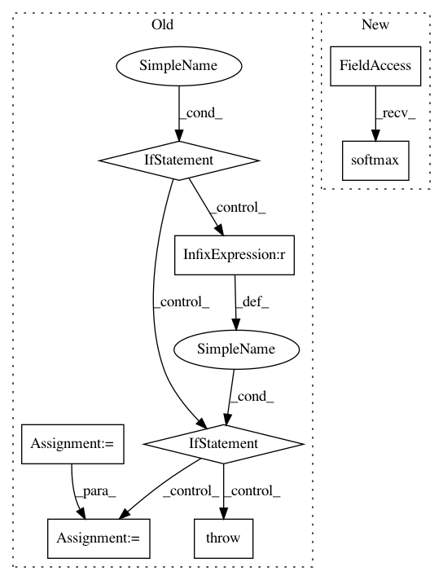

74796ff02e9425ca336f595978fe6e7c422c0378,tensorlayer/activation.py,,pixel_wise_softmax,#Any#Any#,80
Before Change
- `tf.reverse <https://www.tensorflow.org/versions/master/api_docs/python/array_ops.html//reverse>`_
with tf.name_scope(name) as scope:
exp_map = tf.exp(output)
if output.get_shape().ndims == 4: // 2d image
evidence = tf.add(exp_map, tf.reverse(exp_map, [False, False, False, True]))
elif output.get_shape().ndims == 5: // 3d image
evidence = tf.add(exp_map, tf.reverse(exp_map, [False, False, False, False, True]))
else:
raise Exception("output parameters should be 2d or 3d image, not %s" % str(output._shape))
return tf.div(exp_map, evidence)
After Change
- `tf.reverse <https://www.tensorflow.org/versions/master/api_docs/python/array_ops.html//reverse>`_
with tf.name_scope(name) as scope:
return tf.nn.softmax(output)
//// old implementation
// exp_map = tf.exp(output)
// if output.get_shape().ndims == 4: // 2d image
// evidence = tf.add(exp_map, tf.reverse(exp_map, [False, False, False, True]))
In pattern: SUPERPATTERN
Frequency: 3
Non-data size: 8
Instances
Project Name: zsdonghao/text-to-image
Commit Name: 74796ff02e9425ca336f595978fe6e7c422c0378
Time: 2017-04-11
Author: dhsig552@163.com
File Name: tensorlayer/activation.py
Class Name:
Method Name: pixel_wise_softmax
Project Name: stellargraph/stellargraph
Commit Name: 145170ca9bbd89aa01d8a40841e3c039d3683af8
Time: 2019-06-03
Author: andrew.docherty@data61.csiro.au
File Name: stellargraph/layer/graph_attention.py
Class Name: GraphAttention
Method Name: call
Project Name: tensorlayer/tensorlayer
Commit Name: 4c02d6d4da5ba31d7c9e6e11e6415e8bd2fa2962
Time: 2016-11-21
Author: dhsig552@163.com
File Name: tensorlayer/activation.py
Class Name:
Method Name: pixel_wise_softmax